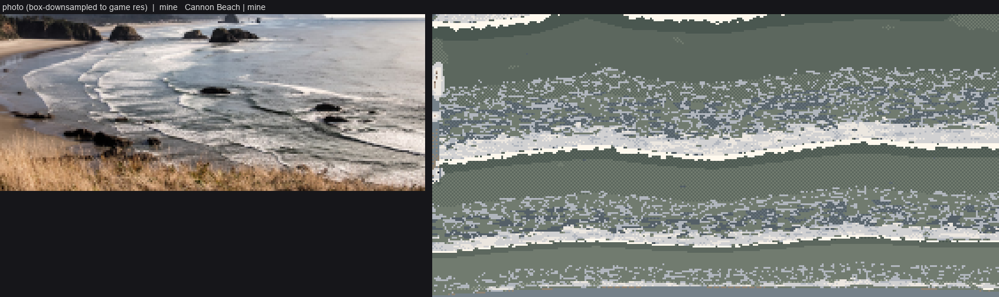
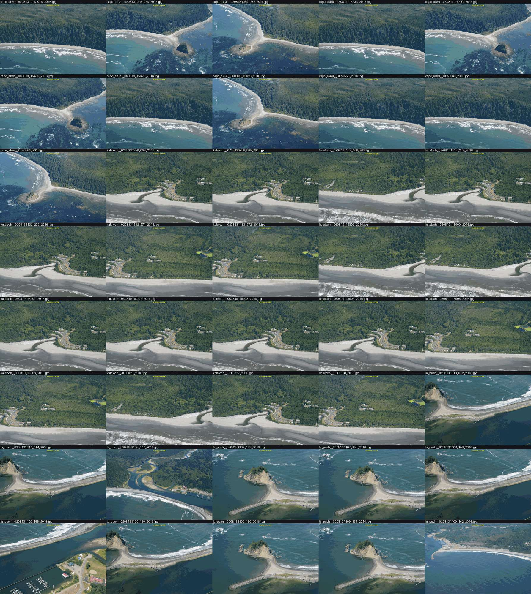
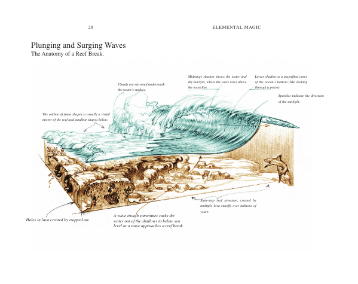
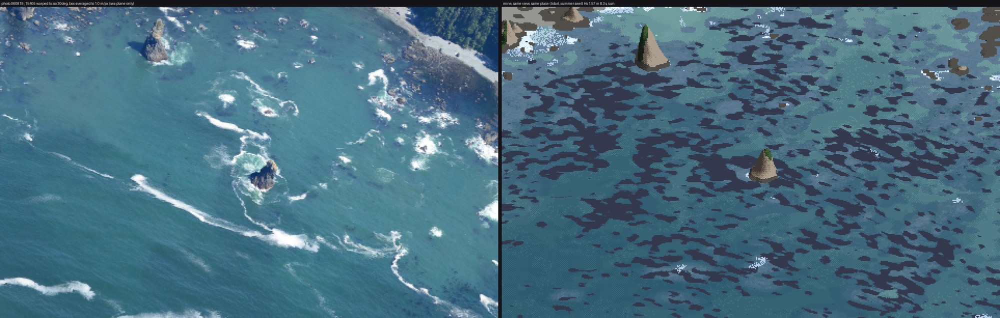
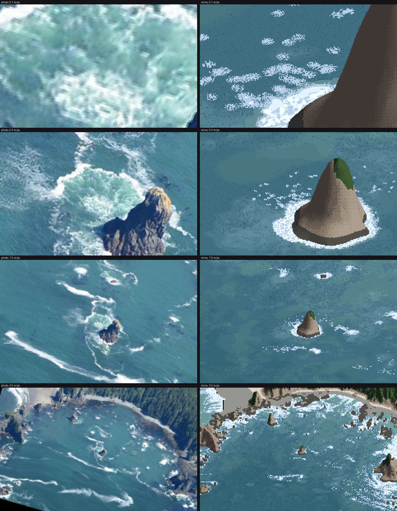
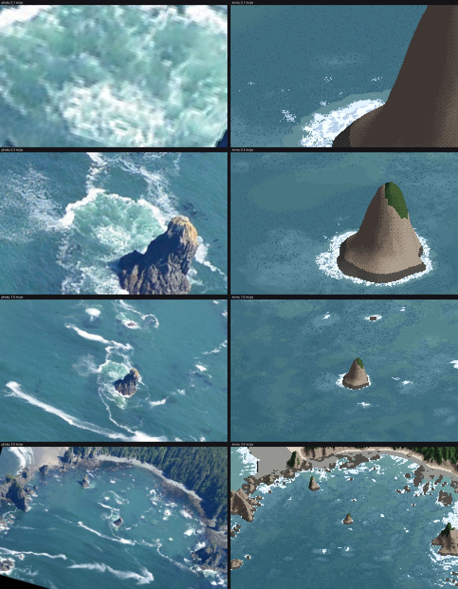
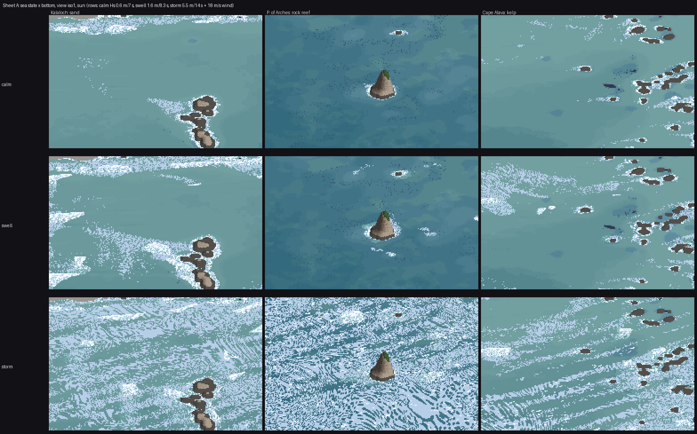

The sea, from the sea floor up
By the sea student. What I teach from this is on the front page; every step I took is in the notebook. This is the story in between: what I did, in order, what I read, what I measured, and where I went wrong.
The brief was one line with a lot behind it: the open sea and surf seen from oblique aerials, meaning sea colour, swell, surf lines, foam around stacks and kelp, for the Olympic coast and the San Juans, at every scale voxsim shows. The coast painter already drew depth bands and surf, and the brief said so plainly: beside a real WA Ecology oblique photo it reads as cartoon rings.
I had about three hours of working time, one laptop shared with thirty other lanes, and Modal for anything heavy. Here is how it went.
1. Reading the ones who went before
The first thing I opened was the earlier water student's surf, because it had covered surf around stacks as one subject among many.

The water study's surf compared with Cannon Beach (elements/water/out/cmp_surf_cannon_v2.png).
Its critique log became my list of things not to do. The critic had named ruled parallel bands, olive water, "direction-less confetti" foam, foam darker than the sea, screen-door checker, and "thick warm-cream stripes" for bore fronts. From the art school I took the channel student's eighteen tells (Morse code above all) and the aerial student's coast plate: zoned by depth, surf as crest plus lace. The coast lane's own study image showed what the brief meant by rings.
Then I went looking for data. voxsim-data/places/olycoast/obliques has 253 WA Ecology frames, and I made contact sheets of every 2016 one:

Part of the 2016 set. Each frame is 4200×2800, taken from a low aircraft at about 45°.
Point of the Arches (060819_15405) had everything in one frame: two stacks with white rims and jade pools, crescent breaks over reef heads, long foam streaks in open water, and dark kelp specks. Cape Alava had the kelp mats, and a 2006 frame of Shi Shi had a big swell on a sand beach. I also pulled about 120 openly licensed ground photos (Rialto, Ruby Beach, Second Beach, bull kelp, fog and overcast surf). The fetch tool failed silently the first time because the output folder's parent didn't exist.
2. The model system: engineers, a critic and an animator
I searched the Internet Archive for the books that already explain how the sea looks. Bascom's Waves and Beaches is lending-only. The Shore Protection Manual (1984) and Vaughan Cornish's Waves of the Sea (1910) downloaded, and I added both to the studio library. Tyndall's Fragments of Science came back as a 170-byte file, and I moved on.
The SPM's chapter 2 is the physics I needed, drawn: refraction diagrams whose orthogonals bend over the sea floor, with heights read from their spacing, and an aerial photo of it happening.

SPM figure 2-17, refraction at Westhampton Beach.
Ruskin's Modern Painters I had the drawing half. §29 names the two foams I then built as two separate fields: "the thick creamy curdling overlapping massy form which remains for a moment only after the fall of the wave", and "the thin white coating into which this subsides, which opens into oval gaps and clefts". §32 gives the way to see a heavy sea: "the grand division of the whole space of the sea by a few dark continuous furrows".
The book that tied them together was in the purchased shelf: Gilland's Elemental Magic vol. II. His reef-break block diagram carries this caption:

"The outline of foam shapes is usually a visual mirror of the reef and sandbar shapes below."
That sentence is the whole problem with rings. If foam mirrors the reef, I needed the reef.
3. The answer key
The olycoast lidar is topo-bathymetric: 1 m elevation that reaches about 27 m under the sea. And the sea surface in the photo is a plane. Put those together and five rock pairs give a homography from photo to map (reg.py).

The first registration. The lidar's waterline (magenta) and map grid (yellow and cyan) projected onto the photo. The middle fits, the edges drift.

At full resolution, near the centre stack: the waterline contour sits on the rock. I nudged one pair by about 60 px after this.
With that I could warp the photo onto the map and read its colour against depth:

The photo on the map, with the 0, 2, 5 and 10 m depth contours.
I got the photo's hour from the buoys and gauges: Neah Bay's NDBC buoy read Hs 1.57 m, 8.3 s from 281°, and the La Push tide was 0.45 m NAVD88. Over sand the water was L* 50 at 1–6 m, falling to 40 at 14–20 m. The deep sea here is mid teal, not navy, and foam is cool, at b* −2 to −9. The numbers are in how-to 1; they became the palette.
4. Swell
My first ray solve over the real cove:

Blue is wave height and red is breaking. The green crest lines, taken from ray travel time, fan out from the headland's tip into its shadow.
Rays leave shadows and crests don't, so crest positions came from a separate travel-time solve (Dijkstra with a delayed super-source, an idea I took from the water study):

The crests wrap into every lee.
The solve told me something I hadn't expected: coves are quiet. Hrms falls from 1.08 m offshore to 0.47 m inside the cove, with no breaking at all, because the rays diverge over the bowl. A uniform surf band round every shore is exactly wrong.
5. The first pictures, and a decoy bug
The first coupled sim and render:

Stage 1 v1: photo (left, warped into the same 30° view and box-averaged to 1 m/px) | mine. Kelp is dark camouflage over half the cove, and there is almost no foam.
The water colour was already within a couple of L* of the photo. Everything else was wrong. The kelp beds had no gaps, so I made the mat's area equal an expected canopy cover by rank-uniforming the noise. The foam was the real problem: the photo has a crescent on each reef head, and mine had none.

v3. Some collars on stacks, foam as stipple, and still no reef crescents.
I logged the rays' tube widths along the march and found one pinned at the 8× clip: rays that died on rocks were still counted as neighbours, so their living neighbours thought they were spread thin. I fixed it and wrote in my lessons that this had been the cause. It wasn't. Writing these pages, I went back to the numbers I'd printed at the time. The fix raised the reef-head median Hrms from 0.50 to 0.57 m and left the offshore-to-cove profile unchanged. The cove really is quiet; the rays were right.
The real cause was the depth used for breaking. The 1 m lidar has already blurred the reef pinnacles a wave feels, so breaking now uses the shallowest depth within 5 m:

Made for these pages from the final run (figs.py pinnacle): the same crest against the smoothed depth (left) and the pinnacle depth (right).

v4: crescents on the reef heads, sharp shoreward and fading seaward. Nothing draws them. A crest sets whitewater as it passes and the whitewater decays behind it (τ 6–8 s), so the shape follows.
6. Foam that won't stay thin
Persistent foam started as a grid field, advected every other step. It smeared into fog:

The fields in map view (right) beside the photo on the map (left): smudges on the shore and no streaks.
So decaying whitewater sheds particles, carried by the current and killed on an exponential clock:

The particles (yellow) and the current (green). Foam leaves the rocks in plumes.
The current needed care. The first potential-flow solve returned NaN everywhere, because a rock pool cut off from the sea made the matrix singular. And a smooth drift made streaks as straight as rulers, so I added a divergence-free eddy field. By then a 60-period sim took eight minutes and the laptop's load average was over 100, so I moved the sims to Modal: two CPUs per job, numpy and scipy only.
Cape Alava's first render taught me the lifetimes:

Cape Alava with one foam lifetime of 450 s: a blanket of foam everywhere.
The photo shows most foam gone within metres of its break and a minority surviving for hundreds of metres. So there are two populations, with most particles living about 25 s.
7. Lockstep, and the first critic
The brief asked for the close view and the iso view to be developed together from the start. From here every change was judged on one sheet at 0.1, 0.3, 1 and 3 m/px, each beside the photo:

Lockstep v1. At 0.1 m/px foam is pill-shaped blobs; at 0.3 m/px the stack has a white collar straight onto blue.
I sent a fresh critic the sheet and the eye-level view. Most important first, it said: my foam was "short horizontal blobs" where the photo's is "long, thin diagonal ribbons that curl around the rocks"; "the pale turquoise churned water around the stack" was missing; the whites were hard-edged and flat; the open water was patchy; the kelp was scattered single dark pixels; and the beach view was "a snow field". What worked was the base blue and the collar on the weather face.
Each became a rule (how-to 4):
- the jade pool as its own measured ramp;
- foam as coverage cut by a smooth threshold, never stipple;
- depth bands from a 6 m-smoothed depth, which removed the camouflage;
- kelp specks in groups;
- every texture size quantised in octaves of pixel size.

v2, after coverage and the pool.
8. Eye level

The first eye-level frame. The grid's y axis points south, so right × forward points down.
After fixing that it was the snowfield the critic had named: foam seen from above, lying flat on a flat plane. The fix was to make the water a heightfield, from each crest's own height and phase, with Fresnel taken on each facet:

The first heightfield. Waves stand up, but a fixed-step march cut the faces into columns.

Bisection on every hit. The columns are gone.
That is as far as eye level got (how-to 6).
9. The sweep, marbled paper, and three passes to see it
I ran nine sims on Modal: calm, swell and storm × Kalaloch sand, the Point of the Arches reef and Cape Alava kelp. Then I rendered the sheets.

The first sheet A. The storm row is swirled into marbled end-paper.
A second critic confirmed it ("marbled paper"). It also said the rows barely differed on the reef, the kelp was "solid navy blobs", golden hour was a green-grey tint and dusk lost its foam.
The marbling took three passes to understand. I had rotated every texture lookup by the local current, so that foam would "follow the flow". The current swirls round every rock and eddy, and the textures printed its curl. The first pass fixed the threshold field and nothing changed. The second fixed the Worley holes, and plain blobs were left. One global direction for every texture was the rule.


The Kalaloch storm before and after.
The vocabulary sheet had its own small failure. I had placed the crops by guess, and the panel labelled "reef heads" showed plain water:

I re-picked every crop centre from the fields (the maximum of whitewater and aeration, of foam, or of wave height near land) and relabelled what they actually showed, including one label that says the streaks are two to three times too short.
10. What writing these pages found
Making the figures for these pages from the final code, I reran two numbers I had been relying on. Both had moved.
- The foam calibration had drifted. I had matched the photo's white fraction (4.6%) with 4.7%. After everything I changed later, it is 3.5%. Worse, in the open-water middle of the cove the photo has 5.7% and I have 0.9%: my white is on the shores and the photo's is in the streaks. A matching total had been hiding a placement miss (how-to 7).
- My storm diagnosis was wrong. I had written that per-crest breaking broke "only ~20% of crests" in the storm. Measured, 77–87% of cells in the saturated zone are breaking. What is saturated is the old foam: 8.3 million particles at capped coverage burying the bore bands.
Both corrections are on the teaching pages, and the study's own LESSONS.md still has the old claims; I was asked to leave that folder as it is.
What I learned
- Get the answer key first, and get it at your view. One homography made every later judgement concrete, including the ones that went against me.
- The drawing problem was a physics problem. The biggest visual gain of the whole study, surf where the reef is, came from refraction and a pinnacle depth, not from painting.
- Fields carry shape; textures stay put. I relearned this at great cost on the storm.
- Rerun your measurements after every change, and measure regions, not totals. I didn't, and my best number misled me for half the study.
- A bug you find and fix isn't necessarily the cause. The dead-ray bug was real. I wanted it to be the explanation and wrote it down as one.
Where it stands
Close to the photo: sea colour by depth and bottom in sun, and the placement of surf. The white on the points and stacks, crescents on the reef heads, the quiet cove and the jade pools all come out of the lidar with nothing placed by hand. The relighting to overcast and fog holds up. Not there yet: the drifting streaks, the storm surf zone, eye level, kelp's material, golden and dusk. The San Juans aren't started. The sheets are in img/ (A_*, B_*, C_surf_vocabulary.png), and the method is on the front page.